作者博客：http://hi.baidu.com/%C6%C1%B1%CE
该文首先由网友祭祀芙蓉转载至本站，在此再次表示感谢！现将原作者的文字整体转载至本站。
第一场：2007年2月13日20：00，QQ游戏五子棋三手交换五手两打2室4桌，湖北连珠棋社 鱼缸 V.S. 自由社 菜农 3：2 胜
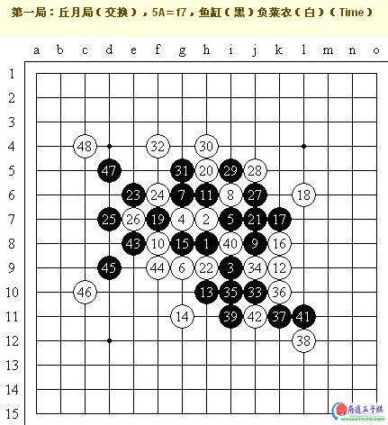
丘月开局转化为斜月开局，正常行棋至黑9，菜农忽然变招，白10！这是一个白稍弱的变化。鱼缸明显是有备而来，略一思考后按定式行至黑19。或许是对定式之后的变化缺乏研究，也或许是在第一局中并未进入状态，白22之后鱼缸的进攻方向有些盲目而且太过直接，菜农执白防守相对容易，黑27至黑41一串交换或许有些浪费？黑43作杀，白44局部最强，如果冒险防于c6位则黑棋可在m10做两套VCF杀，白无解。白48之后黑方超时判负。
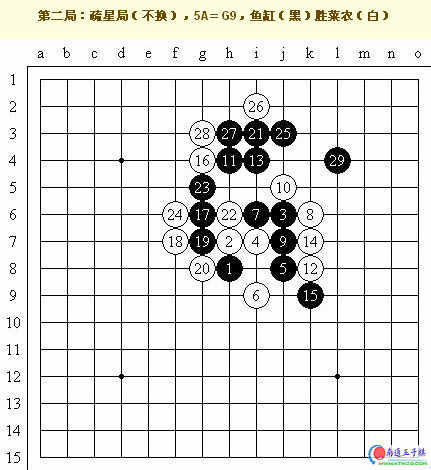
疏星局中，这个白8的变化黑棋其实相对好走，白棋也可选择k8的位置来防守。白10若反向防守则黑棋在h5攻后占黑11位做杀，黑胜。白10后鱼缸黑11强攻！其实这手有些急躁，或许是受到了第一局超时失利的影响。以下菜农轻松防守。白20？白20防在白22或白24均为强防，但实战的白20太弱，或许是菜农急于进攻了。黑21做杀好招！白22无奈，若防于白24则黑棋可占j4依然极强！白棋无论如何没有先手。鱼缸的黑23进攻节奏好，白24无奈，否则黑棋有VCF。黑25又一妙手做杀，形成必胜棋型！白26局部最强，黑27后鱼缸已经两头蛇，黑29精准的VCF双杀（j2、k3/h5、h2、j4）！白棋的眠三完全没法发挥作用，菜农无奈，投子认负。这局是鱼缸进攻实力的完美展现！
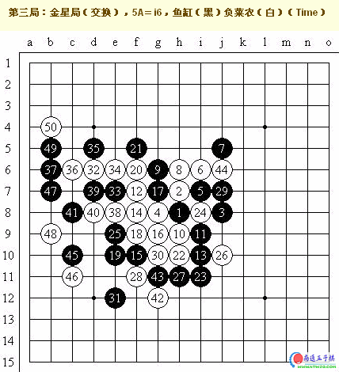
菜农在本局中选择了金星局的长定式，但前25手鱼缸应对完全正确，于是菜农在白26没有选择“流浪者的梦”定式，而是选用了三好丈夫（日本棋手，八段）做的另一个研究，并加入了自己的一些变化，如实战所示。白44后局势再次稳定，黑优，突如其来的变化再次让鱼缸不知所措，黑45很强的一手，白46也强防，白50后鱼缸再次由于之前思考时间过长而导致超时判负。
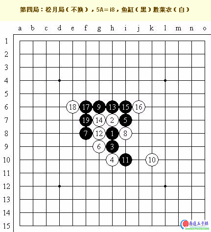
鱼缸选择了松月平衡开局，黑9是旧定式，菜农的白14走得有些随手，走在黑15位才是正着。实战中黑棋优势极大，黑15后白棋只顾右边黑棋巨大的优势也没有过多地思考就跟在了白16的位置，之后黑棋简单追胜，鱼缸干净利落地拿下了这一局。
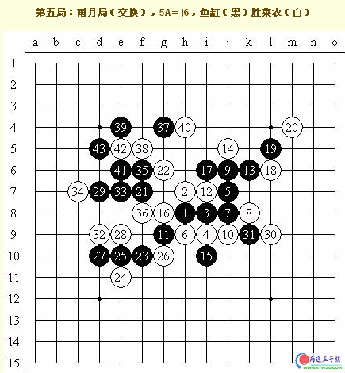
最后的决胜局，双方都打起了十二分的精神，成就了这盘最为精彩的对局！雨月开局，白4复杂的强防！黑11后局面对双方都很明朗，白14稳健。白16、白18是问题所在！白16防白36位应该更稳，形势也比较好，实战中的白16是进攻性的棋，问题也不很大，但菜农没有将思路贯彻下去，白18是防守性的棋！此时白18反向防守才是最佳。这个偏差让鱼缸抓住了机会，黑21！菜农上下不能兼顾，犹豫许久防在了白22，浪费了宝贵的时间。黑23是平凡的好招！白24虽然也强防但终究少一些反击，而且线路比较单调，让黑棋有更大的空间来自由选择进攻方法。黑25不慌不忙，黑27平三尽显高手本色！白32的位置虽然连接丰富，但若不防守白28的话黑棋更有简单的VCT，黑29依然不急于占白32的位置，黑棋没有在空间狭小的左边浪费自己的材料和先手优势。菜农的白32终于忍不住防守在了d9要点，但恰恰中了鱼缸的“调虎离山”之计！黑33、黑35连攻看似平凡，怎料黑37妙手生花，是联系优势、打开局面、通向胜利的绝妙手段！这步棋用怎样完美的词汇都难以形容！三步进攻一气呵成，将保留的优势转化到了空间开阔的上方，以下白38虽尽力防守，但黑39再盖一步，造出必胜型。黑43后黑棋双杀已定，菜农无奈认输，鱼缸拿下了这一场比赛的胜利。
第二场：2007年2月14日20：00，QQ游戏五子棋三手交换五手两打2室1桌，湖北连珠棋社 高飞 V.S. 自由社 阿福 1.5：3.5 负
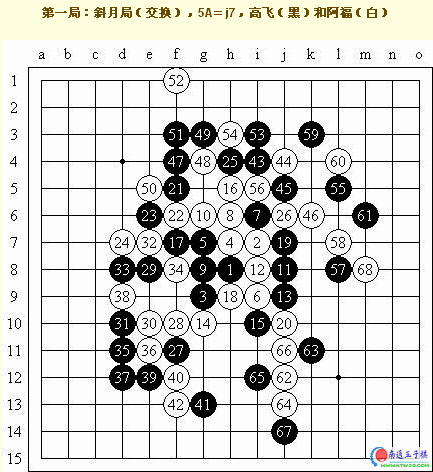
双方在斜月局中展开了第一次的较量。阿福白8变招稍弱，黑9可以选择防在黑11位套回原定式，但高飞黑9选择的进攻是好棋！以下黑棋几乎必胜！但阿福的白16脱谱是高飞没有准备过的，局面又逐渐平和起来。以下至白24变化正常，黑25是连接左右的好棋。黑27、黑29攻势凶猛，白30果断！否则被黑棋占到要点，白棋难防。黑35是极具威胁的一手，而阿福此时已经开始读秒，但是在极短的的时间和极大的压力下阿福仍能保持清醒的头脑来计算，选择了白36的最强防守，这让我们体会到了阿福的水平，如果信手防在黑37的位置，则黑棋轻松连三即成两头蛇之势。以下白40是稳固的防守，至此波涛汹涌的下部终于重归稳定，黑棋只好转战上方。黑47、黑49、黑51又是极强的进攻，阿福依然稳稳地防在了要点，遏制住了高飞的疯狂进攻。以下黑棋不得不停下进攻的脚步。白62在下方造成了小小的威胁，若白64下在黑65位或许能扩大优势，但阿福似乎无心争胜，他需要一个平稳的开端。白66就封死了黑棋的所有线路，白68后双方和棋。
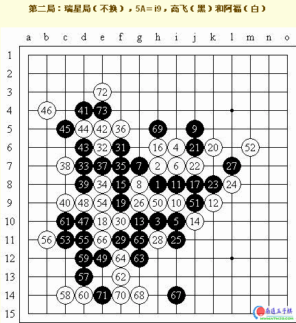
瑞星开局后，面对白12的复杂变化，高飞选择了黑13平衡的长定式，看来也是抱着求稳的目的，其实最近比较流行于在白22的位置防守。以下双方正常演变至平衡局面。白32有多种选择，比如下在黑37的位置，实战中黑白双方迅速交换，看来是对此非常地熟悉。局面似乎一度在高飞的节奏控制之下，至黑55！若随手防在中间，则黑棋可迅速追胜，阿福没有中计，思考了一下，稳定住节奏，稳稳地防在了白56的位置。以下黑棋局部无胜。黑69后白棋上方局部也无胜，黑73后双方再次接受了和棋的结果。
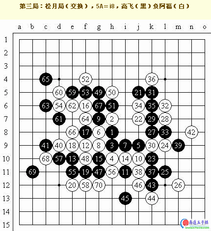
松月开局之中，高飞给出了流行的黑5，白6在白8位也是强防，实战中的白6黑棋相对好走。白12变化复杂，可以选择直接占据i8位。以下双方正常变化至黑19，阿福没有先冲四而是直接防守，看来是有意引诱高飞活三进攻，或许阿福研究过黑棋在左边没有很好的发展。但实战的黑21令人难以置信！看似占到了很好的空间布局，实际上由于联系过少而达不到很高的效率，还不如在白22位先冲四交换，白22自然占住要点。黑23、白24交换之后，黑27、黑31又是强劲的进攻，白32好棋！黑33若反三争先或许会有取胜的机会？实战中白34之后黑棋再次丢掉了大好的局势。黑39后白40的冲四时机掌握得非常精准，切断了黑棋上下的最强连接。白42如果贪图活二在j8的位置防守，则黑棋有VCF，实战的白42是强防！黑45做VCF，同时过渡优势，白46也强防，黑47！高飞的棋感此时简直好得令人难以置信，在极短的时间内就给出了这个强点！白48！阿福虽然已经读秒，但仍然找到了这个唯一的防守，不愧为四段的高手！现在白棋终于可以腾出手在上方大干一场了。黑57后白棋若在j13先冲四，或许可以反向防守扩大优势？实战中白棋在上方虽强，但局部无胜。黑63落下后阿福似乎迟疑了一下，高飞似乎也发现了――连续的绝对先手进攻让黑棋的眠三憋成了六腐，阿福将上下白棋的所有材料和优势联系在了一起，为大家展示了一个漂亮的VCT！高飞的一个失误和阿福超乎常人的对局面材料和优势的观察能力成就了阿福这一局的胜利。
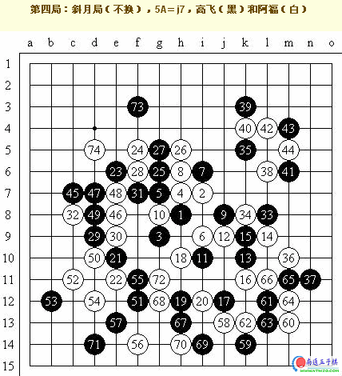
连续三场不胜终于把高飞弄得急躁起来，阿福自然也知道这一点，并且利用了这一点。黑9不敢再攻，白10在i8打断即可套回平和的原定式，但阿福不会给高飞冷静思考的机会，白10弱！引诱黑棋进攻。果然不出阿福所料，黑17、黑19、黑21、黑23完全是为了做棋而做棋、为了占据空间而占据空间，白棋则是稳扎稳打的防守，颇有高手风范。高飞完全忘了五子棋中连接的重要性，我们不妨设想黑21下白22位，白22防f10，黑23再占黑21位又会是什么结果？不客气地说这高飞在几步棋中的表现还不如一个2级棋手的水平。以下局面复杂，双方交换频繁，但局外人可以清楚地发现棋局的进程和结果都是由阿福在掌控。白54好形，但黑55也强防。白60又是好棋！黑61后白棋似乎可以抓禁取胜？大家可以思考一下这个问题。总体来讲阿福从中盘就开始牵着高飞走了，白74后双方握手言和。
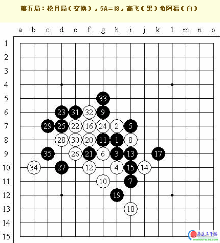
本场比赛阿
第三场：2007年2月15日20：00，QQ游戏五子棋三手交换五手两打2室8桌，湖北连珠棋社 米兰 V.S. 自由社 仇云飞 3：2 胜
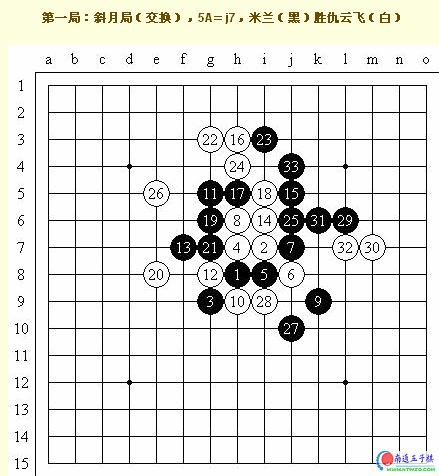
斜月开局后白8是主动的招法，白12也可选择下在白14的位置，以下按照定式双方应对至黑15。白16强手！白16走h10是另一路变化。实战中若黑17不慎应对于黑25的位置，则白18下白18的位置，以下演变为白胜。米兰长考之后弈出黑17的的正确招法！以下白20积极，反向防守也可，黑稍优，黑21、白22都是极好的应对。交换至黑25后，白26？白棋左边势力虽好，但仇云飞实际低估了米兰的进攻能力，黑29妙手必胜！黑31巧妙做杀！仇云飞只得投子认负。
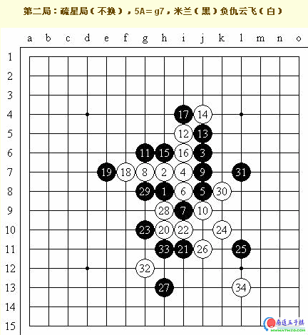
米兰选择了疏星开局，最近的研究表明中盘后白棋好走，因此仇云飞没有交换。这个定式中黑9也可以选择反向防守，比较积极一些。以下至黑19变化正常，白20选择多，比如白22或白30等位置，实战中白20比较稳妥。黑21？其实选择白22或白24的位置都是强防，实战的黑21可能稍弱。白22当然一手，黑23也不可谓不强，但仇云飞神机妙算，白24、白26妙手必胜！米兰只得乖乖束手就擒。
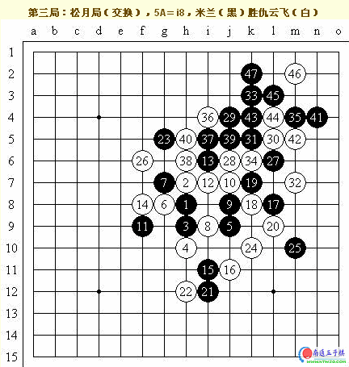
松月开局中米兰的黑7变招！以下至白16后局面平缓，黑17、黑19进攻其实有些急，但白20的防守太贪图反击，不好。黑21是平凡的好招，做出一个活二和一个大跳二！白22上下不可兼顾，无奈防守，黑23使得黑棋上方的优势一下子生动了起来。以下米兰的进攻十分流畅，最后黑37～黑47以一套精彩的VCF结束了该局的战斗。
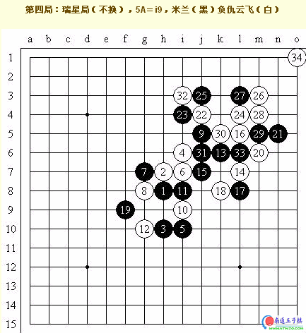
瑞星开局中，仇云飞的白14变招并不好，给黑棋很大的优势，至白18局面基本定型为黑稍优。黑23后黑棋有攻势，白棋或许可以考虑防于f6，但仇云飞在实战中弈出白24，展开了强烈的反击！米兰或许对这样的手段准备不足，黑25也稍弱。白32活三后米兰本应在j线冲四解禁，但不知何故竟没有看到这一手，仇云飞侥幸利用VCF追下取胜。
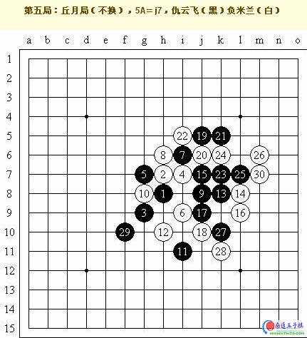
决胜局终于到来，本次比赛自由社在连续14局执白后终于拿起了黑棋。双方按照黑优定式弈至白10，黑在i10盖或许更加稳妥？以下黑13、黑21强硬，白棋被动防守，但优势已经逐渐显现。至黑25活三，仇云飞终于因为材料和连接的不足而放弃了进攻。黑27过渡，黑29企图开辟新战场。白30强攻！黑棋投子认负？！其实黑棋完全可以防守于l6位，白棋暂时不能取胜。仇云飞的首次执黑即败在自己的失误之中，实在是可惜！
第三场：2007年2月16日20：00，QQ游戏五子棋三手交换五手两打2室1桌，湖北连珠棋社 海月 V.S. 自由社 蓝鲸 3：2 胜
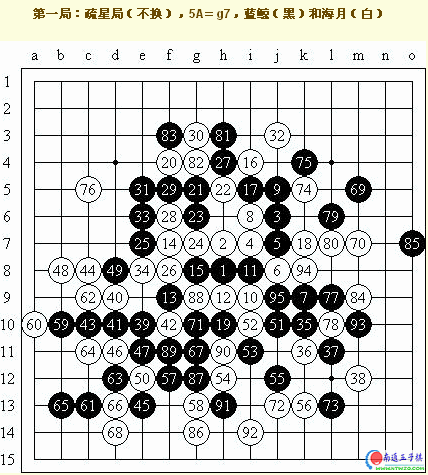
疏星开局中蓝鲸的黑7避开了流行变化，其实我们会看到蓝鲸在本场比赛中总共4次选择这个变化！以下双方按照定式弈至黑15，白16是积极而强烈的变招！同样是一步好棋。蓝鲸面对未知变化，小心翼翼地走出黑17进行打断，海月白20全面展开进攻！但似乎有些操之过急，此时黑棋先黑21、黑23小心交换，黑23在8线先直接冲四或许更好？黑31后局面重新恢复稳定，但由于白棋进攻过度，局面其实黑稍优。白32无理手！应该是败招！白棋脱先！黑33若在e9进攻或许更好？实战中蓝鲸选择了交换左边的优势，而在右下开辟新的战场，显示了蓝鲸必胜的自信！以下黑棋猛攻，但似乎并没有找到很好的感觉。黑39是隐蔽的进攻，黑45极好的拓展！以下黑棋虽优，但蓝鲸已经读秒，白46后黑棋虽然没有简单胜，但不排除通过做棋扩大优势而取胜的方法。局面按照蓝鲸的风格一串猛攻，脱离蓝鲸的风格以和棋结束。
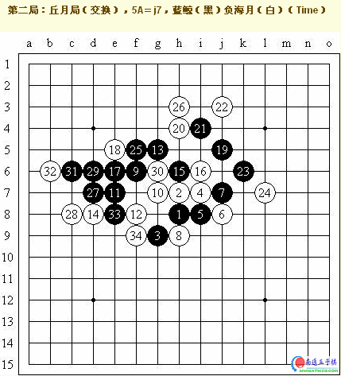
丘月通斜月开局的第三个打点，黑9秉承蓝鲸的风格猛烈进攻！白10可选择防于白12的位置，实战中白10稳健。黑11成双二，实际上在f7位简单防守或许更妥当。白12可以考虑在黑13位跳三防守？至白14套回定式。若黑15在i5强攻则白棋可以追胜！以下，黑17成角进攻，白18很有韧性的防守，双方都有很多机会。黑19扩大黑棋优势！蓝鲸连续进攻至黑33，海月防守后黑方局部无胜。接下来黑棋可在左边防守一手，白棋在右边有优势，但总体来说蓝鲸还可进行反抗，局面细腻，可惜此时蓝鲸超时判负！
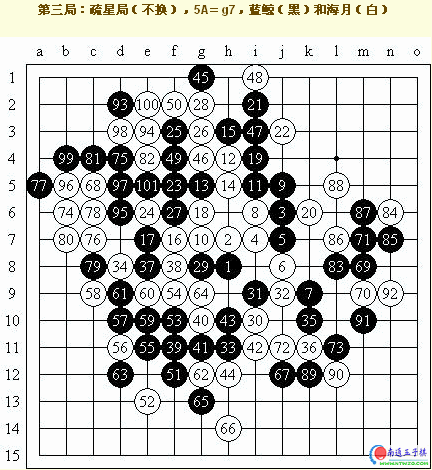
同样是这个黑7的变化，黑21是积极的手段！至白24外止，黑25进攻！白26可能稍弱，或许可以先在黑27位跳四？黑27做杀，好棋！一子多用！以下黑棋舒舒服服地防守在了黑29，黑棋其实稍好。白30还想反抗，黑31、黑33也都是富有攻击性的好棋。黑37眠跳三并且防守白棋的眠三。黑39强手！黑41是明显的强手，此时若黑43走白44位则黑棋必胜，可惜蓝鲸错过了这个绝好的进攻机会！选择了更符合感觉的黑43。海月不愧为六段高手，立刻防住白44要点！以下黑棋虽优势但取胜比较困难。蓝鲸在接下来的几手中虽尽力拖延时间搜索胜利，但仍然一无所获。黑53若反向活三并在白62位做棋，则白在黑59位是唯一防守。以下黑棋企图在右边展开进攻，黑87是隐蔽的作杀，但海月轻松防住。双方力战百手，握手言和。
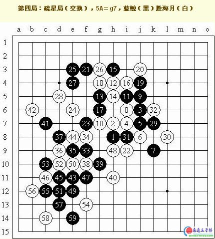
蓝鲸在这局疏星中展开了流畅的进攻！黑17也可选择黑23的位置。白24有些保守，给了黑棋一些机会，黑33是进攻的好形！黑37看似委屈，实际是巧妙地把上下两方面的优势联系在了一起！白44后，黑棋可选择在c9作杀，然后黑棋依次走黑47位、白46位、黑49位同样必胜！蓝鲸的进攻则更加清晰而精彩。白46、白50、白52都唯一防，但黑棋的进攻实在太好，黑55后黑棋已经两头蛇。海月尝到了失败的滋味。
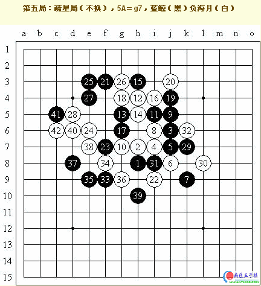
同样的前35手，白36反向防守，黑37可行。白38进攻，黑39？白棋简单进攻取胜。如果黑棋防守正确，依然有一定优势。蓝鲸甚是可惜！丢掉了大好局面，也输掉了这场比赛。
原作者是……复平面？？？
那个是我百度空间的名称啦……作者是屏蔽哈。
还有在“新闻视点”里那两篇通讯也是我最先在百度五子棋吧发表的。
嗯，就这样，支持一下楼主。
楼上的“屏蔽”你好，我帮你发下，感觉你的博客很好，特发下出来：
http://hi.baidu.com/%C6%C1%B1%CE

［ 有志青年 于 2008-5-27 6:34:33 时奖励此帖[金币加 20 威望加1］
已经修正，感谢您发现并提出！